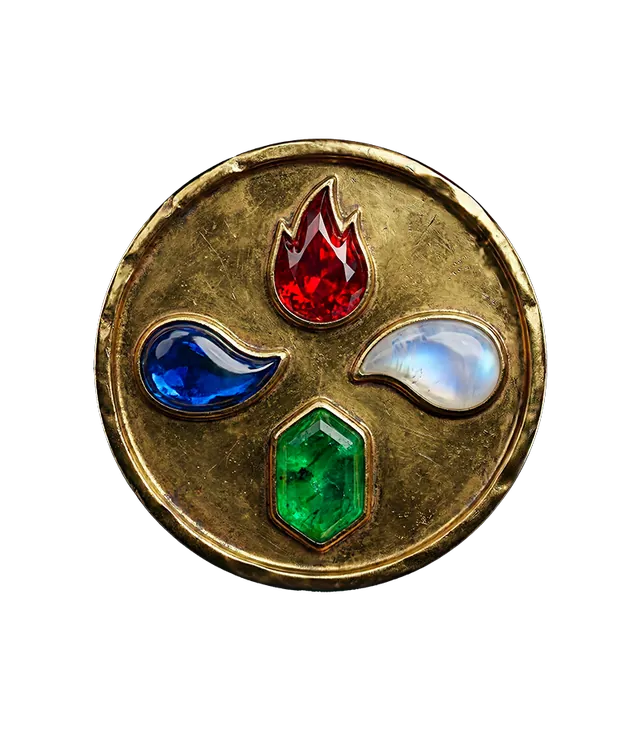

Sanctuaire des éléments
Le Bol Tibétain : Purifier l'Esprit par le Son
Par Madeleine3 min de lecture

Parfois, le flot incessant des pensées peut te submerger. Un brouillard mental s'installe, t'empêchant de trouver la clarté, la paix intérieure tant recherchée. Tu te sens agité, déconnecté, prisonnier d'un dialogue interne incessant qui te vole ton énergie et ta sérénité. C'est un défi universel de notre époque, un appel silencieux de l'âme à retrouver son havre de paix. Mais savais-tu que la clé de cette libération pourrait résider dans une vibration millénaire, un son pur qui porte en lui la sagesse de l'élément Air ?
L'Air, Maître du Son et Souffle de Vie
Dans les traditions ancestrales, l'élément Air est bien plus qu'une simple brise. Il est le souffle de vie, le véhicule de la pensée, le messager de la communication, et surtout, le régent du son. L'Air, c'est l'espace entre les choses, le mouvement invisible qui permet aux vibrations de se propager. Quand ton esprit est encombré, c'est souvent un signe que l'énergie de l'Air est déséquilibrée en toi : trop de mouvement, trop de pensées non ancrées, un mental hyperactif.
C'est là que la magie du bol chantant intervient. Forgé à partir de métaux sacrés, ce n'est pas seulement un instrument ; c'est un portail vibratoire. Lorsque tu le frappes ou le frottes, il émet des ondes sonores pures, profondes, qui se propagent dans l'air et résonnent avec chaque cellule de ton être. Ces vibrations sont une invitation à l'ordre, à l'harmonie. Elles agissent comme un doux vent purificateur, capable de balayer les pensées parasites, ces murmures incessants qui troublent ton silence intérieur.
Le son du bol chantant, en incarnant l'énergie équilibrée de l'Air, a la capacité de briser les schémas mentaux stagnants. Il t'aide à te défaire de l'emprise du mental, à dissoudre les tensions, et à te reconnecter à un état de conscience plus vaste et plus paisible. C'est une véritable douche vibratoire pour ton esprit, une offrande de clarté qui t'aide à retrouver ton centre, ton ancre au milieu du tumulte.
Le Rituel du Son : Ancrer la Sérénité
Intégrer le bol chantant à ta pratique de méditation est un acte puissant de bienveillance envers toi-même. Voici comment tu peux l'utiliser pour apaiser ton mental et favoriser un état méditatif profond :
- Crée ton espace sacré : Trouve un lieu calme où tu ne seras pas dérangé. Allume une bougie, diffuse un encens léger si tu le souhaites. Assieds-toi confortablement, le dos droit, les pieds ancrés au sol.
- Fixe ton intention : Avant de commencer, prends un instant pour définir ce que tu souhaites libérer ou accueillir. Par exemple : "Je souhaite apaiser mon mental et trouver la clarté", ou "Je me connecte à la paix intérieure."
- Le premier son : Prends ton mailloche et frappe doucement le bord du bol. Laisse la vibration se déployer, remplit l'espace. Ferme les yeux et concentre-toi uniquement sur le son. Sens-le te traverser.
- La danse des vibrations : Tu peux ensuite frotter délicatement le bord du bol avec la mailloche pour créer un son continu et profond. Laisse ce son t'envelopper. Visualise les vibrations comme une lumière dorée qui purifie ton esprit, dissipant les pensées comme des nuages dans le ciel.
- Respire avec le son : Chaque inspiration te nourrit du son, chaque expiration te libère de ce qui te pèse. Laisse-toi porter par cette mélodie apaisante, qui t'aide à te détacher de l'agitation extérieure et intérieure.
- Le retour au silence : Lorsque le son s'éteint, reste quelques instants dans le silence qui suit. Ce moment est souvent le plus profond, car il te permet d'intégrer pleinement la nouvelle clarté, la paix installée.
Pratique cela régulièrement, même pour quelques minutes, et tu ressentiras une nette amélioration dans ta capacité à gérer le stress et à trouver la quiétude mentale.
Ton Sanctuaire Intérieur t'Attend
Le bol chantant est un messager, un allié précieux sur ton chemin spirituel. En te connectant à la puissance purificatrice de l'élément Air à travers ses vibrations, tu t'offres la possibilité de pacifier ton mental, de dissoudre les pensées parasites et de t'ouvrir à une méditation plus profonde. Laisse le son te guider vers ton sanctuaire intérieur, cet espace de sérénité inaltérable qui t'appartient de droit. Embrasse cette sagesse ancestrale et retrouve la clarté, la paix et la joie d'un esprit apaisé.